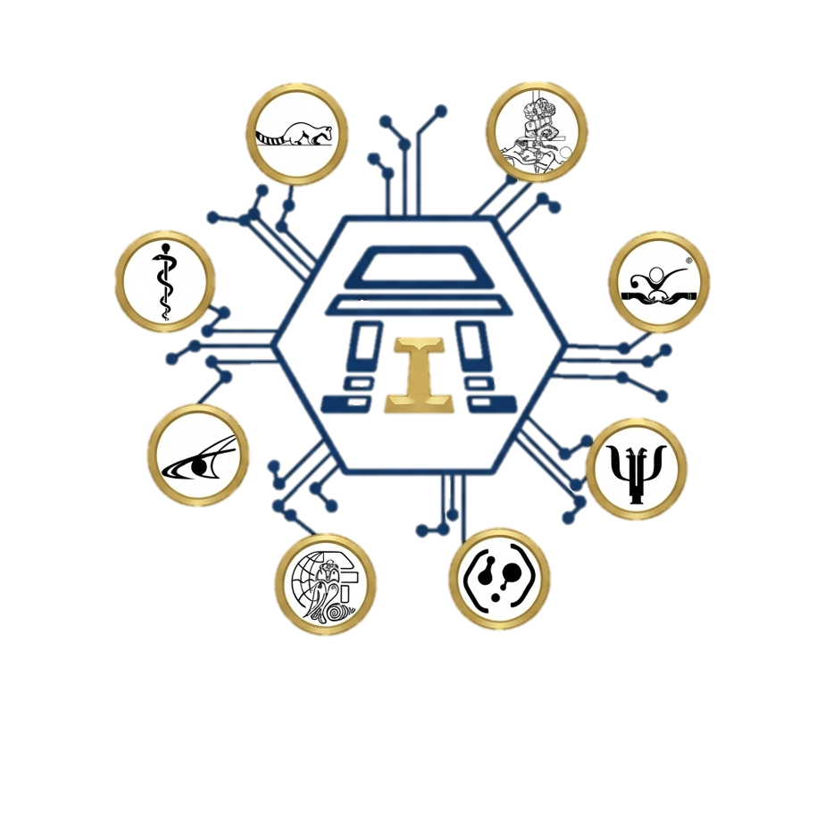

Tu salud menstrual, sexual y reproductiva, sin rodeos.
Aquí puedes preguntar lo que sea. Te escuchamos, te explicamos y tú decides. Sin juicios, sin sermones y sin que nadie más se entere.
“No tienes que decir en voz alta a qué vienes.”
de universitarias mexicanas reportan dolor menstrual
Estudio en 2,154 estudiantesde ellas llega a consultar a un profesional
La brecha que venimos a cerrarde embarazos adolescentes no son planeados
ENADID 2023, INEGIes la ventana para la profilaxis post-exposición
Después ya no es opciónNo necesitas saber el nombre médico de lo que te pasa. Elige lo que más se parezca a tu situación y te decimos exactamente qué sigue.
Si pasó hace poco, el tiempo importa
Hay situaciones donde actuar en las primeras horas cambia el resultado. Si te encuentras en alguna de estas, ven sin cita: te atendemos el mismo día.
Mucha gente no viene porque no sabe qué esperar. Esto es exactamente lo que pasa desde que llegas.
Llegas
En recepción sólo te piden tu nombre y tu número de cuenta. No tienes que decir en voz alta a qué vienes, ni frente a nadie. Si prefieres escribirlo, hay una tarjeta para eso.
Sin explicacionesPlaticamos
Pasas a un consultorio cerrado, sola o solo. Te preguntamos lo necesario para entender tu situación y tú preguntas todo lo que quieras. No hay preguntas tontas aquí.
Puerta cerradaDecides
Te explicamos las opciones con sus ventajas y desventajas reales. Nadie te va a presionar hacia ninguna. Si necesitas pensarlo, te puedes ir y volver.
Tu decisiónSeguimiento
Si hace falta, agendamos una revisión. Si tu caso necesita un especialista, te decimos exactamente a dónde ir y hacemos la referencia por escrito.
No te soltamos¿Tengo que ir con alguien?
No. Puedes venir sola o solo. Si quieres que alguien te acompañe dentro del consultorio, también se puede — sólo si tú lo pides.
¿Cuánto se tarda?
Una consulta de consejería suele durar entre 20 y 40 minutos. Si necesitas ultrasonido o toma de muestra, calcula una hora en total.
¿Qué llevo?
Tu credencial de la UNAM. Si tomas algún medicamento, trae el nombre. Si recuerdas la fecha de tu última menstruación, mejor — pero si no, aquí lo calculamos.
Cuatro áreas, un mismo equipo y un solo expediente. No te van a mandar de una ventanilla a otra.
Toca cada tarjeta para ver qué dice la evidencia.
Una estimación rápida de cuándo viene tu próxima menstruación. Útil para organizarte y para notar cambios — pero no sirve para evitar un embarazo.
Calculadora de ciclo
Sólo se calcula en tu dispositivo. No guardamos ni enviamos nada.
Ingresa la fecha de tu última menstruación y la duración de tu ciclo para ver la estimación.
🔴 Cuándo un sangrado no es normal
- Empapas una toalla o tampón cada hora por más de 2 horas seguidas
- Tu regla dura más de 8 días
- Pasan más de 90 días sin menstruar (y no estás embarazada)
- Sangras entre reglas o después de tener relaciones
Si te pasa alguna, agenda cita. No es "así me tocó".
😣 El cólico tiene un límite
Un cólico que cede con un analgésico común y te deja seguir con tu día es esperable. Uno que te tira a la cama, te hace faltar a clase o vomitar no lo es — y sí tiene tratamiento.
🛡️ Doble protección
Ningún método hormonal ni el DIU protegen contra infecciones. La combinación que sí cubre las dos cosas es un método de alta eficacia + condón. No es exageración: es el estándar.
🧪 Cada cuánto hacerte pruebas
Si tienes vida sexual activa, una prueba de VIH y sífilis al menos una vez al año, y cada vez que tengas una pareja nueva o una exposición de riesgo. La mayoría de las ITS no da síntomas.
Incluidas las preguntas incómodas. Sobre todo esas.
No encontramos nada con esas palabras. Pregúntanos directamente en tu cita — o escríbenos.
Te pedimos lo mínimo indispensable. Puedes cancelar o cambiarla cuando quieras.
¿Prefieres llevar tu propio seguimiento?
Puedes crear tu espacio personal con un código anónimo — sin nombre, sin correo y sin número de cuenta. Ahí registras tu ciclo, tu método y tus pruebas, preguntas lo que quieras y llegas a la consulta con tus dudas anotadas.
Solicitud enviada
Dónde estamos
FES Iztacala, UNAM
Av. de los Barrios 1, Los Reyes Ixtacala
Tlalnepantla de Baz, Estado de México
Por confirmar Edificio y consultorio exactos.
Horarios
Por confirmar Sujetos a la apertura formal del servicio.
Contacto
Por confirmar Teléfono y correo del servicio.
Para una emergencia médica marca 911.